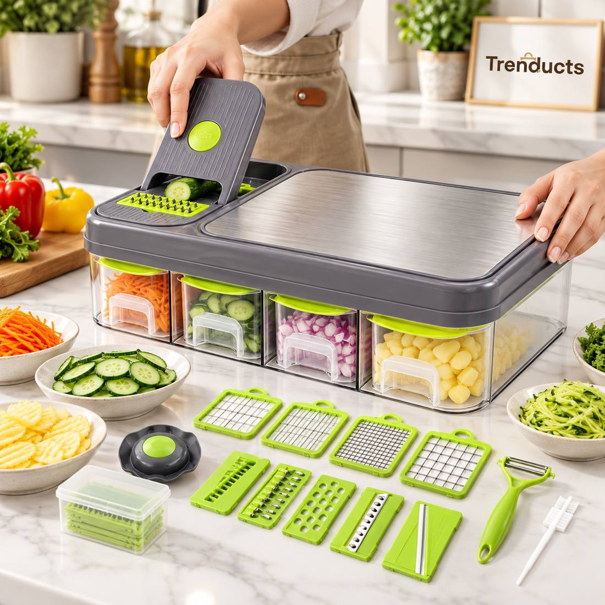
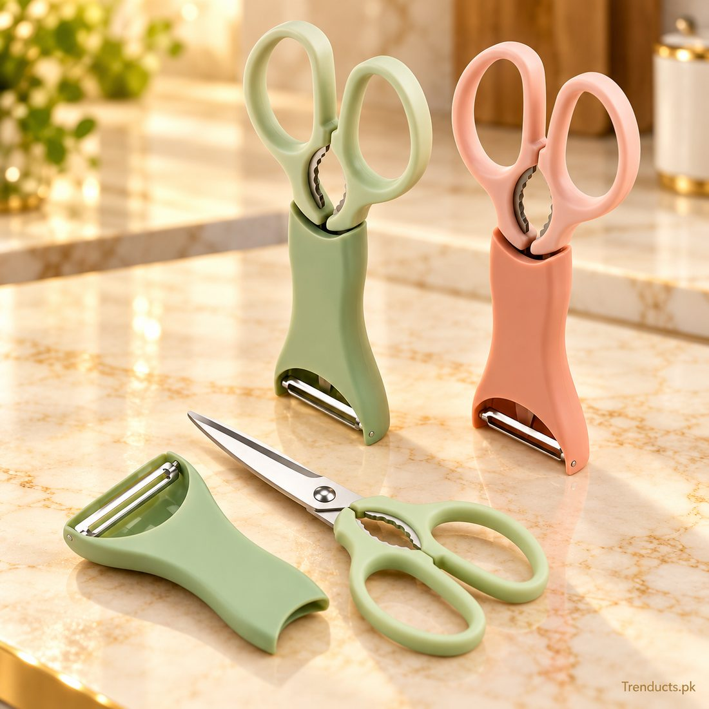

In a typical Pakistani kitchen, cooking starts with a mountain of chopping. Onions for the salan, tomatoes, green chillies, ginger, garlic, coriander, and then salad on the side. A family dinner can easily need twenty minutes of cutting before the stove is even lit. With working parents, smaller households and fewer helpers, more people are turning to simple tools that make prep faster without compromising taste.
Why prep takes so long
Desi cooking relies on fresh base ingredients. Onions have to be finely sliced for bhunai, tomatoes chopped, ginger and garlic crushed. Doing this by hand with a blunt knife on a small board is slow and tiring, and it is the main reason many people order food instead of cooking on busy days.
Useful tools and what they do
- Manual choppers: pull a cord or press the top and blades spin to chop onions, chillies and herbs in seconds
- Mandoline slicers: give thin, even slices for salads, chips and pakoras
- Peelers: much faster and less wasteful than a knife for potatoes, carrots, cucumbers and apples
- Egg slicers: neat slices for salads, sandwiches and garnishes
- Kitchen scissors: perfect for herbs, green chillies and opening packets

You do not need all of them. Start with a good peeler and a chopper, then add others if you find yourself wanting them.
A sharp knife still matters
No gadget replaces one good, sharp knife. Blunt knives slip and cause more cuts than sharp ones. Sharpen your knife regularly on a sharpener or a stone, and keep a separate small knife for fruit.
Batch prep saves the week
Many cooks save time by preparing base ingredients in bulk:
- Chop or slice onions for two or three days and keep them in an airtight box in the fridge
- Make ginger-garlic paste in a batch and freeze it in ice cube trays
- Fry a large batch of onions until golden for biryani and korma and store them in a jar
- Wash and dry coriander and mint, then wrap them in paper towels in a box
A chopper makes batch prep much faster, especially for onions.
Safety tips
Mandoline blades are extremely sharp. Always use the hand guard, especially for the last part of a vegetable. Keep choppers and slicers away from children. Clean blades carefully with a brush rather than your fingers.

Cleaning and care
Food stuck in blades can grow mould. Rinse tools straight after use and wash them with warm soapy water. Many choppers come apart for cleaning; dry every part before reassembling. Check whether parts are dishwasher-safe.
Onion tears
Cutting onions makes eyes water because they release a gas when cut. Chilling onions for fifteen minutes before cutting, using a sharp knife, or using a closed chopper all reduce tears.
Prep tools as a gift
Kitchen prep sets make practical gifts for newlyweds, students living alone and anyone who is just starting to cook.
Quick questions
- Will a chopper make onions too watery? Short pulses give a rough chop that works for bhunai. Over-chopping turns onions into a paste, so stop as soon as they reach the size you want.
- Is a mandoline safe for beginners? Yes, if you always use the hand guard and go slowly. Most cuts happen when people slice the last bit of a vegetable without the guard.
- How long do chopped onions keep in the fridge? In an airtight container, chopped onions usually stay fresh for two to three days. Keep them sealed so the smell does not spread to other food.
- Do I need an electric chopper? Not necessarily. Manual choppers are cheaper, work during load-shedding and are enough for daily family cooking.
Getting started
To speed up your daily cooking, take a look at these choppers, peelers and slicers, from simple 2-in-1 peelers to full mandoline choppers. For more kitchen ideas, visit www.trenducts.pk.
Less time chopping means more time for cooking and for family. The right tools make daily sabzi prep feel lighter.